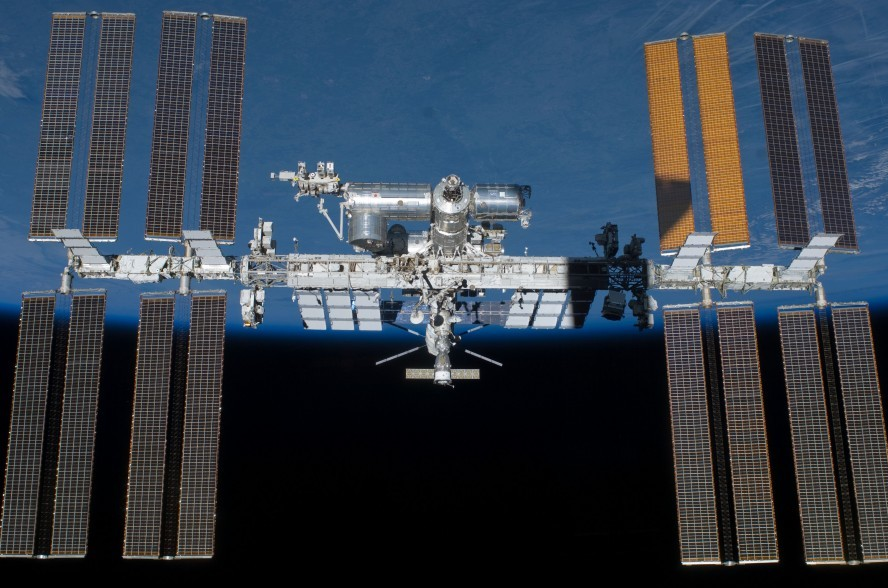
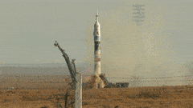
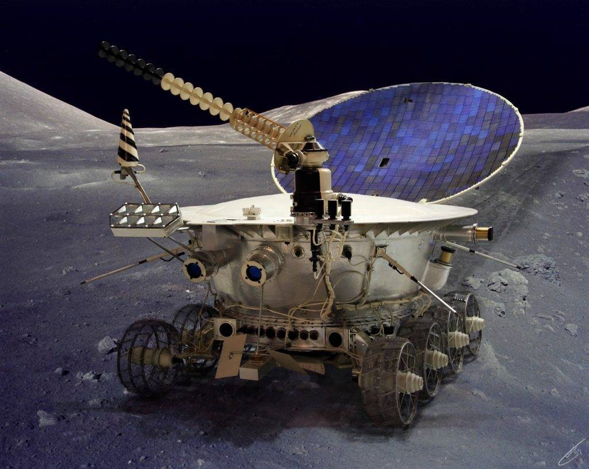

Освоение космоса - это все, что включает наше знакомство с космосом и всем, что находится за пределами нижних слоев атмосферы Земли. Путешествия роботов на Марс и другие планеты, отправка зондов за пределы Солнечной системы, изучение быстрых, дешевых и безопасных способов выхода людей в космос и колонизации других планет - все это освоение космоса. Силами смелых людей, гениальных инженеров и ученых, а также космических агентств всего мира и частных передовых корпораций, человечество очень скоро начнет осваивать космос семимильными шагами. Наш единственный шанс выжить как вид - колонизация, и чем раньше мы это поймем (и будем надеяться, что не поздно), тем лучше будет.

Ракеты человек изобрёл очень давно. Их придумали в Китае много сотен лет тому назад. Китайцы использовали их для того, чтобы делать фейерверки. Они долго держали в секрете устройство ракет, им нравилось удивлять чужестранцев. Но некоторые из этих удивлённых чужестранцев оказались людьми очень любознательными. Вскоре во многих странах научились делать фейерверки и праздничным салютом отмечать торжественные дни.
Долгое время ракеты служили только для праздников. Но потом их стали использовать на войне. Появилось ракетное оружие. Это очень грозное оружие. Современные ракеты могут точно поразить цель на расстоянии в тысячи километров.
А в XX веке школьный учитель физики Константин Эдуардович Циолковский (наверное, это самый знаменитый учитель физики!) придумал ракетам новую профессию. Он мечтал о том, как человек станет летать в космос. К сожалению, Циолковский умер до того, как первые корабли отправились в космос, но его всё равно называют отцом космонавтики.
Почему так трудно полететь в космос? Дело в том, что там нет воздуха. Там пустота, она называется вакуум. Поэтому там нельзя использовать ни самолёты, ни вертолёты, ни воздушные шары. Самолёты и вертолёты при взлёте опираются на воздух. Воздушный шар поднимается в небо, потому что он лёгкий и воздух выталкивает его вверх. А вот ракете, чтобы взлететь, воздух не нужен. Какая же сила поднимает ракету?
Эта сила называется реактивной. Реактивный двигатель устроен очень просто. В нём есть специальная камера, в которой сгорает топливо. При сгорании оно превращается в раскалённый газ. А из этой камеры есть только один выход - сопло, его направляют назад, в сторону, противоположную движению. Раскалённому газу тесно в маленькой камере, и он с огромной скоростью вырывается через сопло. Стремясь поскорее выбраться наружу, он со страшной силой отталкивается от ракеты. А поскольку ракету ничто не держит, то она и летит туда, куда её толкает газ: вперёд. Есть ли вокруг воздух, нет ли воздуха - для полёта совсем не важно. То, что её поднимает, создаёт она сама. Только газу нужно энергично отталкивался от ракеты, чтобы силы его толчков хватило на подъём. Ведь современные ракеты-носители могут весить по три тысячи тонн! Это много? Очень много! Грузовик, например, весит всего пять тонн.
Для того чтобы двигаться вперёд, нужно от чего-то отталкиваться. То, от чего ракета будет отталкиваться, она берёт с собой. Именно поэтому на ракетах можно летать в безвоздушном космическом пространстве.
Форма ракеты (как веретёнце) связана только с тем, что ей приходится по дороге в космос пролетать через воздух. Воздух мешает лететь быстро. Его молекулы стукаются о корпус и тормозят полёт. Для того чтобы уменьшить воздушное сопротивление, форму ракеты и делают гладкой и обтекаемой.

Космические ракеты - не единственные изобретения, которые помогли человеку осваивать космос. Исскуственные спутники и беспилотные роботы(такие как марсоходы и луноходы) также способствовали изучению космоса.

1. Современные аппараты передвигаются со скоростью 4,5 километра в секунду.
2. Космическая система «Энергия», была выведена на орбиту в мае 1987 года с космодрома Байконур.
Полный вес составляет 2400 тонн. Ракета может вывести на орбиту необходимый груз, масса которого достигает 140 тонн. Диаметр носителя составляет 16 метров, а высота 59 метров. Систему значительно модифицировали и теперь она оснащена шестью ускорителями, а также верхней ступенью, сто дает возможность вывести на орбиту груз, масса которого достигает 180 тонн.
3. Самый легкий космический объект, который был выведен на орбиту – это спутник «Эксплорер-49», его вес составлял всего 200 кг, а размах антенн достигал 415 метров.
4.Самый тяжелый космический объект, который находился в космосе – это третья ступень ракеты «Сатурн-5» с аппаратом «Аполлон 15». Общий вес составлял 140 тысяч 512 кг.
5. По легенде, первая попытка исследования космоса китайцами была совершена много веков назад.
Некий чиновник Вань Ху захотел покинуть планету в кресле с привязанными к нему воздушными змеями, и для запуска его слуги одновременно подожгли 47 пороховых ракет. По одной версии, Вань Ху сгорел тут же, по другой, всё же оторвался от земли, и его никто больше не видел. Хотя китаеведы признают эту историю вымышленной, в честь отважного чиновника назван лунный кратер Ван-Гу. Ссылка на легенду есть и в мультфильме «Кунг-фу панда», где для попадания на церемонию По, вместо преодоления ступенек лестницы, успешно совершает полёт на стуле с помощью ракет.